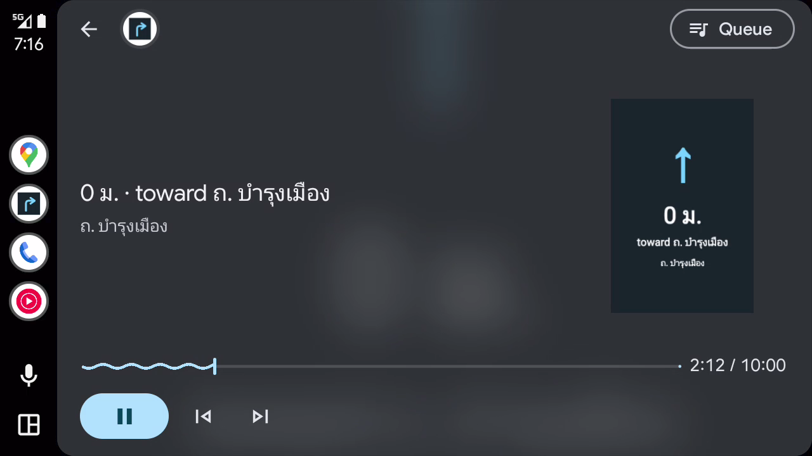
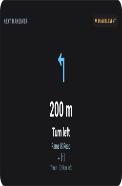
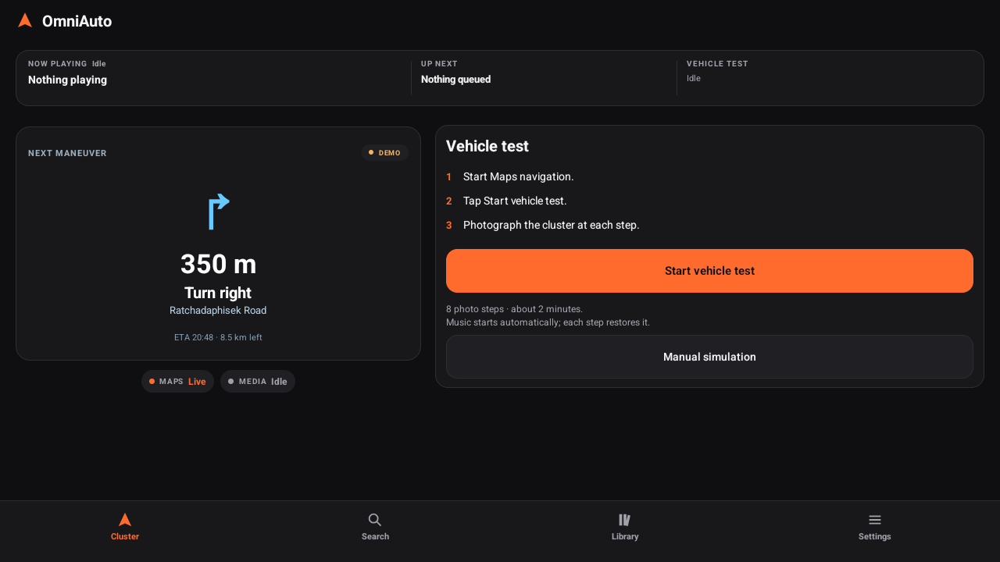

Cluster navigation cues
Distance, action, road, lane, exit and ETA from Google Maps notifications, rendered on the cluster without a vehicle API.
OmniAuto turns your Android phone into the media and navigation companion for a Volvo Sensus cluster: Google Maps cues on the cluster, YouTube Music and local playback, synced lyrics, and a fullscreen player.
Debug-signed test build · Android 11+ · 39 MB. Not a production release.
Built around the 2017 XC90 Sensus display, with Android Auto and phone playback sharing the same queue.
Distance, action, road, lane, exit and ETA from Google Maps notifications, rendered on the cluster without a vehicle API.
YouTube Music search, trending, playlists, downloads and history sit beside your local music library and the shared Up next queue.
Synced lyrics from LRCLIB, with SimpMusic and KuGou fallbacks, cached for seven days and highlighted current and next line.
Tap to hide chrome, drag to seek, ±10 s, captions, PiP and buffered progress. A seek holds the chosen position until the engine confirms it.
Browse and search from the car, control the queue, and keep the same playback session as the phone.
Test the cluster's title, artist, artwork and field limits with a guided matrix and a shareable diagnostic log.
The queue, playback position and a pending seek survive app restarts and ignition cycles, and resume paused where you left them.
No account, no ads and no data selling. Telemetry and crash reporting stay off until you enable them in Settings.
Android Auto keeps the cue, playback and queue on the car display; the Sensus cluster gets the turn, road and distance from Google Maps.


The cues are metadata-only and the app never needs a vehicle API. The same screen tests which fields your cluster accepts.

This is a debug-signed test build, not a production release. Android 11 or newer; allow installs from this source the first time.
Current artifact SHA-256:
3b03c17c29611b0724bdc86f29ffc2e424da4f10270e7f18dc15781cf00271a2.
Older test builds and notes live on
GitHub Releases.